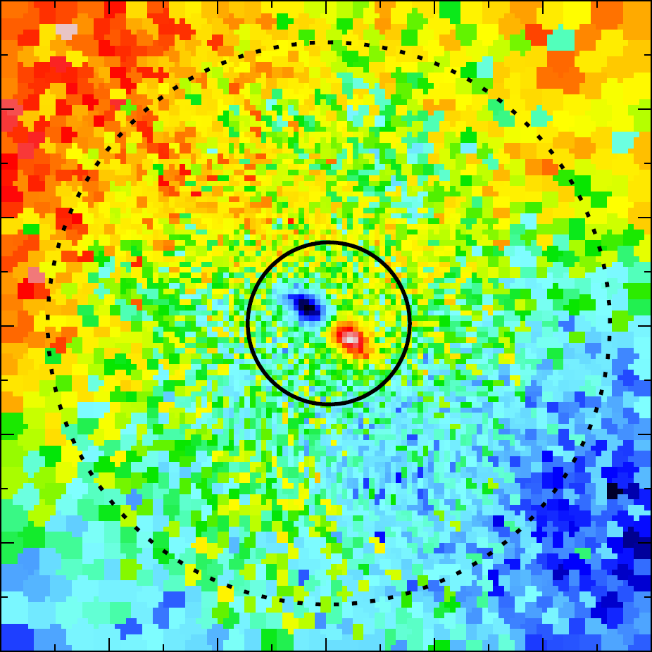
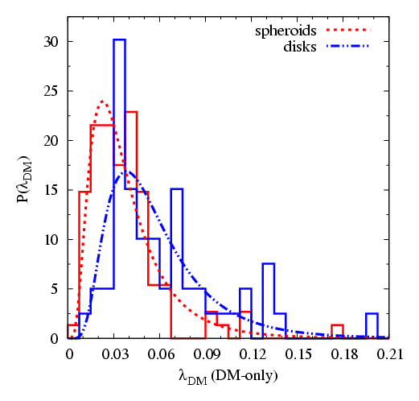

Sutirtha Mukherjee
Kinematical Properties of GalaxiesThis restored research page collects material on the kinematical properties of galaxies in comparison to modern IFS surveys and the angular momentum and spin properties of galaxies.Inner Kinematics of Early Type Galaxies Several recent studies using novel observational techniques, especially integral-field spectroscopy, suggest that the formation history, and thus the closely related in- and outflow of matter, is encoded in the stellar kinematics of galaxies. During the hierarchical assembly of dark-matter halos within the ΛCDM framework, dominant processes like stripping, harassment, and galaxy mergers leave an imprint in the present-day kinematics of early-type galaxies (ETGs). Physical effects like dynamical friction and violent relaxation during these processes are capable of drastically modifying the statistical distribution of orbits, while triggered star-formation and accretion of fresh gas builds up new cold components. Pioneering studies conducted during the past decade showed that, in contrast to the general expectation, ETGs come in two flavours: fast-rotating ETGs exhibit a regular rotating line-of-sight velocity pattern, while slow-rotating ETGs show more complex inner velocity structures leading to a increased velocity dispersion. In a more refined distinction, velocity maps can display multiple internal features like distinct cores, counterrotating components, or even prolate rotation. Those features represent strong constraints on the formation pathways that have to be taken into account by a generic theory of galaxy formation. During the past decade the quality in terms of resolution and implemented physics in cosmological simulations has made a major step forward producing a galaxy population with realistic kinematic properties (see Van de Sande et al. (2019) for a comprehensive comparison). These simulations represent a powerful tool to investigate the physical processes, and their complex interplay, that lead to the galaxies observed today. See Schulze et al. (2017) for more information about kinematic properties and lifetimes of young KDCs, and Schulze et al. (2018) for more information on the statictical properties of early-type galaxies in the fully hydrodynamical cosmological simulation Magneticum, including a study on the connection of kinemtical features in the velocity maps and global kinematical parameters. · · · · Global Spin The formation of galaxies, especially how the different types of galaxies have formed, has been discussed for a long time and is still not fully understood. In this context, the evolution and the distribution of angular momentum is of special interest, as the angular momentum of the visible matter – under the assumption of angular momentum conservation – should carry the information of the underlying dark-matter halo. Since our simulation self-consistently produces disk-like galaxies as well as spheroidal galaxies, we can study the connection between the kinematical properties like the angular momentum, and the morphology of the galaxies and compare them to observations; in the so-called stellar mass–stellar specific angular momentum plane (M∗–j∗ plane) our simulated galaxies agree well with observations by Fall & Romanowsky (2013). When we look at the global spin parameter λ, which includes all the mass (dark matter and baryons) within the virial radius, we find that the spheroidal galaxies live in halos that have a lower median spin than those of the disk galaxies. Even in the dark-matter-only run, which is the same run without baryons, we find that the galaxies identified in the baryon run as disks have a higher median spin than those identified as spheroids. This, taken together with the fact that we nevertheless find spheroids with high λ values, suggests that the formation history and the environment simultaneously shape the halo and the type of the galaxies inside the halo. For more information, see Teklu et al., 2015 and Teklu et al., 2016. |
{kind=link}
{kind=link}
Last update 27.01.2021 by Sutirtha Mukherjee